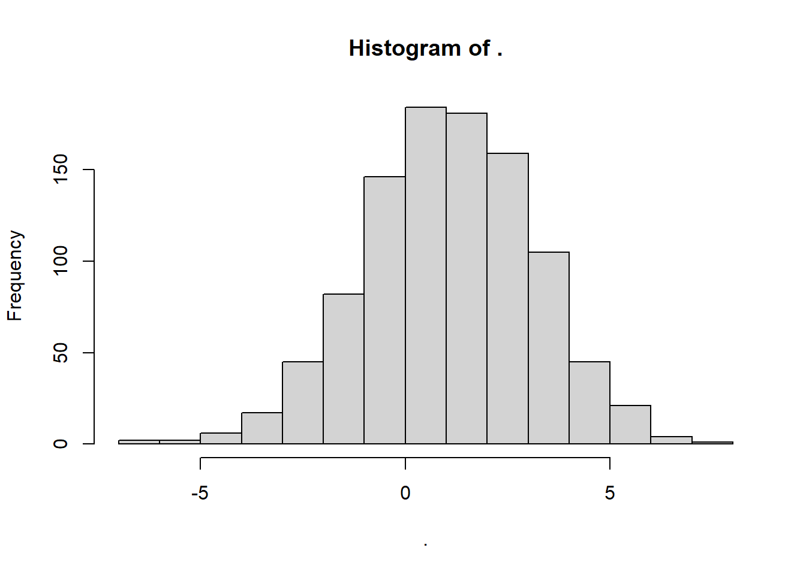
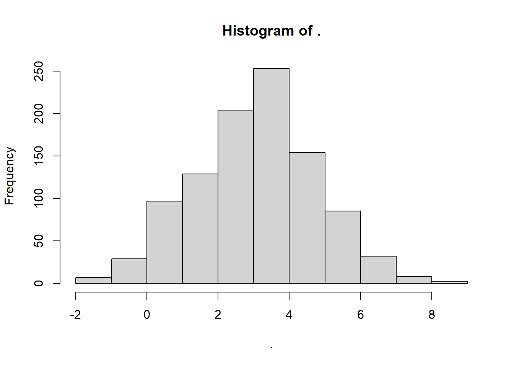
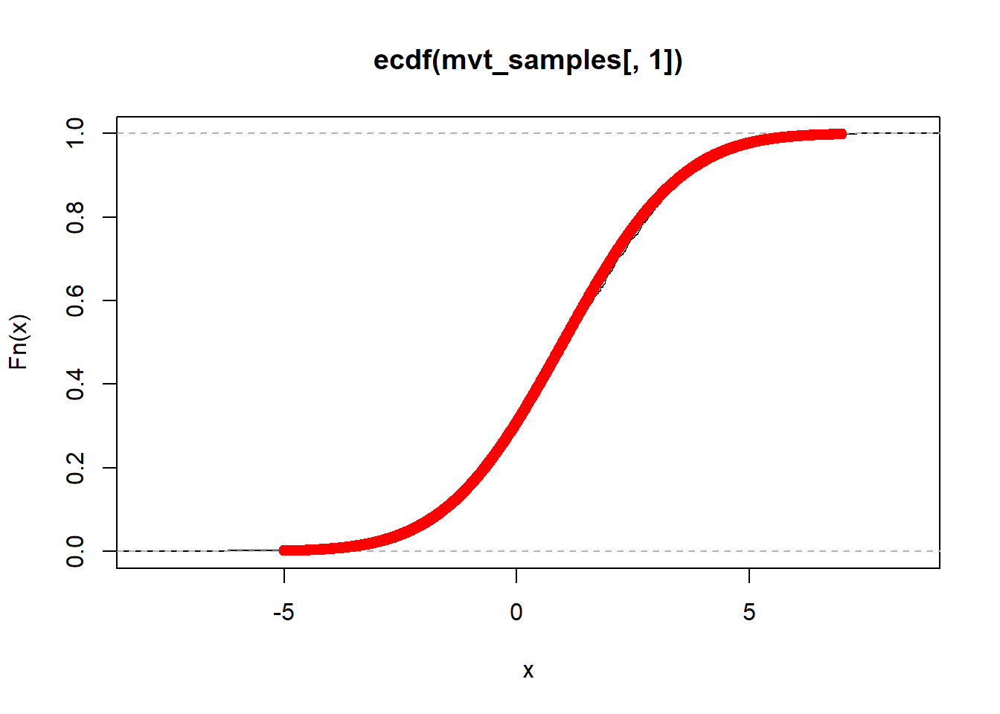

Code
library(tidyverse)
library(mosaic)
library(mvtnorm)zsd.
library(tidyverse)
library(mosaic)
library(mvtnorm)mvtnorm packcage의 rmvnnorm() 이용하는데 rmvnnorm()는 mean vector와 covariance matrix를 arguments로 받는다
\[ \mu =\begin{bmatrix} 1 // 3// 3 \end{bmatrix} \quadd \Sigma =\begin{bmatrix} 4 & -2 & 1 \\ -2 & 3 & -1 \\ 1 & -1 & 2 \end{bmatrix} \]
mean_vector <- c(1,3,2)
cov_matrix <- matrix(c(4,-2,1,-2,3,-1,1,-1,2),ncol=3,byrow=TRUE)
mvt_samples <-rmvnorm(n=1000, mean=mean_vector, sigma= cov_matrix)
head(mvt_samples) [,1] [,2] [,3]
[1,] 1.908940492 5.847948 0.97436961
[2,] 1.895609218 2.205337 2.40481061
[3,] -0.306872690 3.452590 0.54407661
[4,] 2.656710996 1.778121 3.32027764
[5,] 0.007202828 3.401912 0.04266135
[6,] -0.346965009 2.246546 3.21604611# mean vector와 variance vector 확인하는 시각화
mvt_samples[,1]%>%hist()
mvt_samples[,2]%>%hist()
mvt_samples[,3]%>%hist()ecdf(mvt_samples[,1])%>%plot() #empirical cdf
y<-pnorm(seq(-5,7,by=0.01),mean=1, sd=2) # get cdf points
points(seq(-5,7,by=0.01),y,col='red') # marginal cdf
\[ S=\frac{1}{n-1} \tilde{X}^T\tilde{X} \]
# covariance matrix 확인하는 시각화
## 첫째로 표본 공분산 행렬, cov(mvt_samples) 추정
centered_X <- scale(mvt_samples, center =T, scale =F)
1/(1000-1) * t(centered_X) %*% centered_X [,1] [,2] [,3]
[1,] 4.266929 -2.039622 1.083572
[2,] -2.039622 2.896406 -1.026800
[3,] 1.083572 -1.026800 2.084159cov(mvt_samples) [,1] [,2] [,3]
[1,] 4.266929 -2.039622 1.083572
[2,] -2.039622 2.896406 -1.026800
[3,] 1.083572 -1.026800 2.084159cholesky decomposition 또는 촐레스키 인수분해는 선형대수학에서 사용되는 중요한 알고리즘 중 하나로 이는 양의 정부호 행렬을 lower triangular matrix와 그 행렬의 전치 행렬의 곱으로 분해하는 방법이다. 양의 정부호 대칭 행렬 \(\mathbf{A}\) 에 대하여 촐레스키 분해는 다음과 같이 정의 된다. 수의 제곱근을 구하는 개념에 대응시켜서 이해하면 편하다.
\[ \mathbf{A} = LL^T \]
여기서 L은 하삼각행렬을 나타낸다. 촐레스키 분해는 행렬 A가 양의 정부호 임을 전제로 한다. 촐레스키 분해로 A를 하삼각행렬의 곱으로 정보를 압축할 수 있다. 촐레스키 분해는 통계학, 수치해석학, 머신러닝 등에서 사용되는데 가장 대표적인 예가 다변수 정규분포의 표본을 생성하는 것이다. system of linear equation의 해를 구할 때도 사용된다.
chol() 함수를 이용해 촐레스키 분해를 수행할 수 있다.
# define a positive matrix
cov_matrix [,1] [,2] [,3]
[1,] 4 -2 1
[2,] -2 3 -1
[3,] 1 -1 2upper_triangular_matrix<-chol(cov_matrix)
lower_triangular_matrix<-t(upper_triangular_matrix)
# verify the decomposition
lower_triangular_matrix%*%t(lower_triangular_matrix) [,1] [,2] [,3]
[1,] 4 -2 1
[2,] -2 3 -1
[3,] 1 -1 2모든 공분산 행렬은 positive semi definite인데 cov_matrix의 모든 대각원소가 양수이기 때문에 positive definite matrix가 된다.
촐레스키 분해는 multivariate normal distribution에서 sampling하여 난수를 발생시키는 원리를 이해하는데 도움이 된다.
목표로 하는 다변수 정규분포의 공분산 행렬에 대해 촐레스키 분해를 수행하고, 표준 정규분포로부터 뽑은 표본에 분해된 행렬을 사용하여 선형변환을 하는 방식이다. random vector가 \(\mathbf{x}\) 가 iid이고 표준 정규 분포를 따른 다고 했을 때 random vector, \(\mathbf{y} \sim N(\begin{bmatrix}1//3//2\end{bmatrix},\begin{bmatrix}4&-2&1//-2&3&-1//1&-1&2\end{bmatrix})\) 라고 한다면
\[ \begin{alinged} \mathbf{y}&=\mathbf{L}\mathbf{x}+\mathbf{\mu} \\ E(\mathbf{y})&= \mathbf{L}E(\mathbf{x})+\mathbf{\mu} \\ Var(\mathbf{y})&= \mathbf{L}Var(\mathbf(x)) \mathbf{L}^T= \mathbf{L}Var(\mathbf(I)) \mathbf{L}^T=\mathbf{L} \mathbf{L}^T =\Sigma \end{aligned} \]
이 성립한다.
더 쉬운 예제를 들면, \(X \sim N(0,1) \quadd Y \sim N(4,9)\)
\[ Y=3X+4 \]
의 선형식이 성립한다.
그러므로 data의 표본을 토대로 simulation을 할 때는 data의 표본 공분산 행렬을 구해 촐레스키 분해를 하여 L을 구한뒤 rnorm()을 변수의 갯 수 만큼 사용하고 데이터의 변수의 표본 벡터를 구해서 더해 주면 데이터의 분포에 기반한 시뮬래이션이 가능해진다.
\[ Y=A\begin{bmatrix}rnorm(X_1) //rnorm(X_2)//rnorm(X_3)\end{bmatrix} +B \]
정규 분포를 따르는 random vectors에 어떤 행렬을 곱하거나 더해도 그 변환된 Y역시 다변수 정규분포를 따른다는 것이 알려져 있다.
set.seed(00)
random_samples <- lower_triangular_matrix %*% matrix(rnorm(3000),nrow=3,ncol=1000) + mean_vector
#위와 같은 식
random_samples <- lower_triangular_matrix %*% matrix(c(rnorm(1000),rnorm(1000),rnorm(1000)),nrow=3,ncol=1000) + mean_vector
random_samples<-t(random_samples)\[ \mathbf{L}_{3 \times 3} \text{random_samples}_{3 \times 1000} + \text{mean_vector}_{3\times 1} \]
mean_vector는 브로드캐스팅되어 앞의 두행렬의 연산결과의 각 열에 더해지게 됨.
sample은 아래와 같이 뽑히게 된다.
head(random_samples) [,1] [,2] [,3]
[1,] -0.07612761 4.2403547 -0.2827580
[2,] -1.22520465 2.6778132 2.5256458
[3,] 0.57189770 2.5652002 4.5131124
[4,] 3.71812120 2.2683683 0.9224851
[5,] 1.03533835 -0.4098458 2.7877527
[6,] 3.72684756 1.1950652 2.2052107#표본 공분산 행렬 추정
cov(random_samples) [,1] [,2] [,3]
[1,] 3.849209 -1.820943 1.031505
[2,] -1.820943 2.958023 -1.014896
[3,] 1.031505 -1.014896 2.030114centered_X<-scale(random_samples,center=T,scale=F)
1/(1000-1)*t(centered_X)%*% centered_X [,1] [,2] [,3]
[1,] 3.849209 -1.820943 1.031505
[2,] -1.820943 2.958023 -1.014896
[3,] 1.031505 -1.014896 2.030114random_samples[,1]%>%hist()